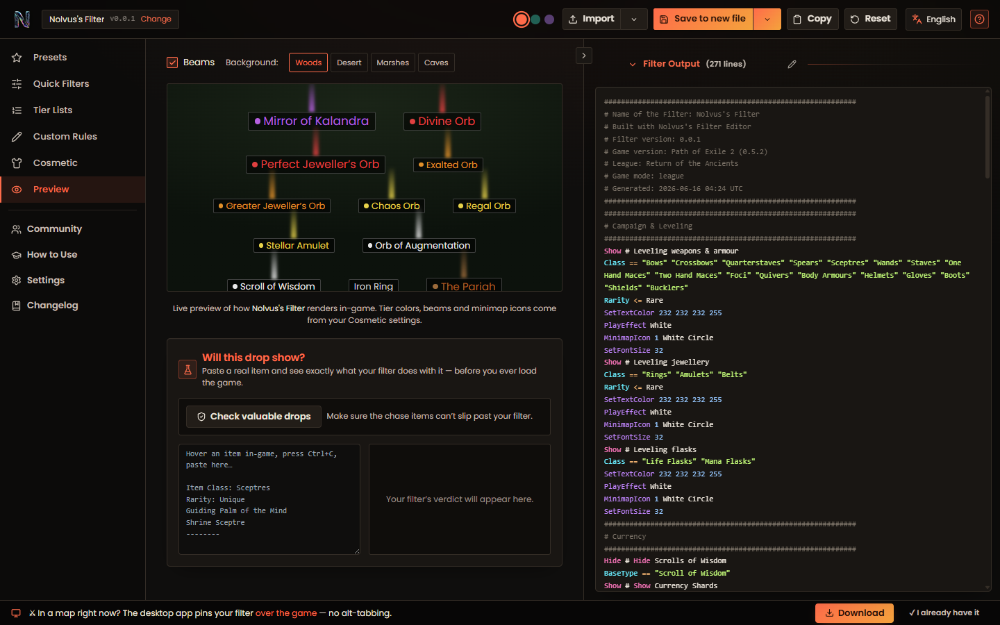

Path of Exile 2 · Companion & Loot-Filter Studio
Build a filter
Build a filter
you can see.
Most PoE2 filter tools hand you a wall of code and wish you luck. Not this one. Tell it where you're at in the game, then click through what to show and what to hide — with real item art, so you're never guessing — and your .filter updates as you go. When it's dialed in, run the Windows app and it sits right on top of PoE2. Price a drop, watch the market, or follow a leveling route without ever alt-tabbing.

